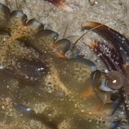
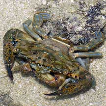
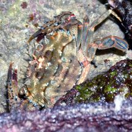

|
|
| crabs text index | photo index |
| Phylum Arthropoda > Subphylum Crustacea > Class Malacostraca > Order Decapoda > Brachyurans > Family Portunidae |
| Blue-spined
swimming crab Thalamita prymna* Family Portunidae updated Dec 2019 Where seen? This colourful swimming crab with bright blue spines is commonly seen on many of our shores, especially those with coral rubble and reefs. It is particularly active at night. Features: Body width 5-7cm. Body rectangular, body sides with 5 bright blue-black tipped spines, the fourth spine is much tinier than the others so it may appear to have only 4 spines. The eyes are wide apart. Between the eyes are 6 rounded equal-sized lobes. Last pair of legs are paddle-shaped. The pincers also have bright blue-black tipped spines. Body is not very hairy, usually smooth and shiny, colours usually yellowish, orange with brown blotches. Thanks to comments by Ondrej Radosta on Marcus Ng's photo on flickr who shared that Thalamita pelsarti looks very similar; T. prymna has a smooth and glossy upper body, while T. pelsarti has a granular almost 'hairy' upper body. |
 Sentosa, Aug 04 |
 6 rounded equal-sized lobes between the eyes. |
 Fourth spine tinier than other spines so it may appear to have only four spines. |
|
 A mating pair. Kusu Island, Jul 04 |
*Species are difficult to positively identify without close examination.
On this website, they are grouped by external features for convenience of display.
| Blue-spined swimming crabs on Singapore shores |
On wildsingapore
flickr
|
| Other sightings on Singapore shores |
 Labrador, Oct 25 Photo shared by Loh Kok Sheng on facebook. |
|
Acknowledgements Grateful thanks to Crabhunter for identification of some of these crabs. Links
|